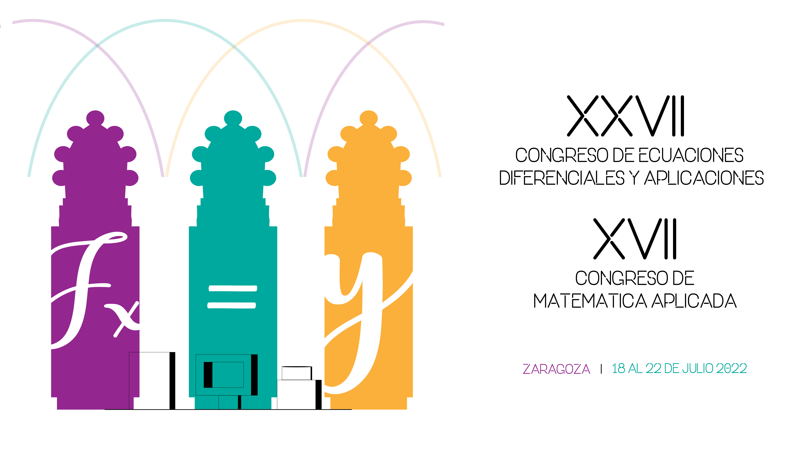

Zaragoza, 18-22 julio 2022
J. L. Gracia, L. Rández
IUMA - Universidad de Zaragoza

Durante los días del 18 al 22 de julio se celebró en Zaragoza el XXVII Congreso de Ecuaciones Diferenciales y Aplicaciones / XVII Congreso de Matemática Aplicada, congreso bienal de nuestra Sociedad. Este congreso fue organizado por el Instituto Universitario de Matemáticas y Aplicaciones de la Universidad de Zaragoza (IUMA) y tuvo su sede en la Facultad de Medicina del campus San Francisco. La organización del congreso estuvo diseñada de forma híbrida y de los 320 asistentes, 290 fueron en forma presencial.
El Comité Científico, presidido por Juan Ignacio Montijano de la Universidad de Zaragoza, y formado por: José Carlos Bellido (Universidad de Castilla-La Mancha), Raimund Bürger (Universidad de Concepción, Chile), Rosa Donat (Universidad de Valencia), Michael Dumbser (University of Trento, Italia), Ernesto Estrada (CSIC-Mallorca), Natalia Kopteva (University of Limerick, Irlanda), Tere Martínez-Seara (Universidad Politécnica de Cataluña), Juan Manuel Peña (Universidad de Zaragoza) y Luz de Teresa (Universidad Nacional Autónoma de México), seleccionó ocho conferenciantes plenarios, dieciocho minisimposios, y ocho sesiones especiales además de la clásica sesión de pósteres.
La sede de la sesión del día central del congreso fue el edificio Paraninfo de la Universidad de Zaragoza, donde se entregó el premio SEMA «Antonio Valle» al Joven Investigador 2022 a David Gómez Castro y Marc Jornet Sanz así como el premio al mejor artículo del SEMA Journal en 2021 a Armengol Gasull. Por último, se entregó la nominación al Premio ECCOMAS a la Mejor Tesis Doctoral de 2021 sobre Métodos Computacionales en Ciencias Aplicadas e Ingeniería a Ernesto Pimentel García.
Los conferenciantes plenarios de esta edición del CEDYA/CMA fueron:
Roberto Barrio (Universidad de Zaragoza)
Albert Cohen (Laboratoire Jacques-Louis Lions, Sorbonne Université, Paris, Francia)
Emmanuil Georgoulis (University of Leicester, Reino Unido / NTU Athens, Grecia)
Volker Mehrmann (TU Berlin, Alemania)
Julia Novo (Universidad Autónoma de Madrid)
Francisco Periago (Universidad Politécnica de Cartagena)
Carmen Rodrigo (Universidad de Zaragoza)
Giovanni Russo (University of Catania, Italia)
Los minisimposios y las sesiones especiales se celebraron en sesiones paralelas, con un máximo de ocho. En cada sesión hubo participantes tanto presenciales como por videoconferencia. Se celebraron las siguientes sesiones especiales:
Partial Differential Equations
Dynamical Systems - Ordinary Differential Equations
Numerical Analysis and Simulation
Numerical Linear Algebra
Optimal Control - Inverse Problems
Applied Mathematics to Industry, Social Sciences and Biology
Mathematical Education
Other: Scientific Calculus, Approximation Theory, Discrete Mathematics
y los dieciocho minisimposios:
Dynamical Systems: Theory and Applications
Numerical Approximation of Hyperbolic PDE Systems and their Applications
PDE Models in Biology
Optimal Control and Inverse Problems
Iterative Processes and Non Linear Equations
ALAMA: Linear Algebra, Matrix Analysis and Applications
New Trends on the 1-Laplacian
Progress on Time Integrators for ODE
Orthogonal Polynomials, Special Functions and Approximation Theory
Success Stories between Academia and Industry at CITMAga
Reduced Order Modeling Applied to Architecture and Engineering
Numerical Methods for Models in Partial Differential Equations
Efficient Solvers for Large Sparse Linear Systems
Nonlinear Analysis in Partial Differential Equations
Industrial Mathematics at the Centre de Recerca Matemática
Partial Differential Equations and Homogenization
Mathematics in Industry and Organizations
Geometric Flows and PDEs in Geometry
El Comité Organizador local estuvo formado por Chelo Ferreira, José Luis Gracia, Etelvina Javierre, Eduardo Martínez, Pedro J. Miana, Ester Pérez, Luis Rández, Teresa Sánchez y Raquel Villacampa, todos pertenecientes al IUMA.
Queremos agradecer de forma cariñosa a los voluntarios, estudiantes del grado de Matemáticas, del programa conjunto en Física y Matemáticas, y estudiantes de doctorado de la Universidad de Zaragoza, que en todo momento estuvieron pendientes que todo funcionara correctamente.
Puede consultarse la información referente al congreso en la página web http://cedya2022.es. En la dirección
hay fotografías del XXVII CEDYA / XVII CMA.